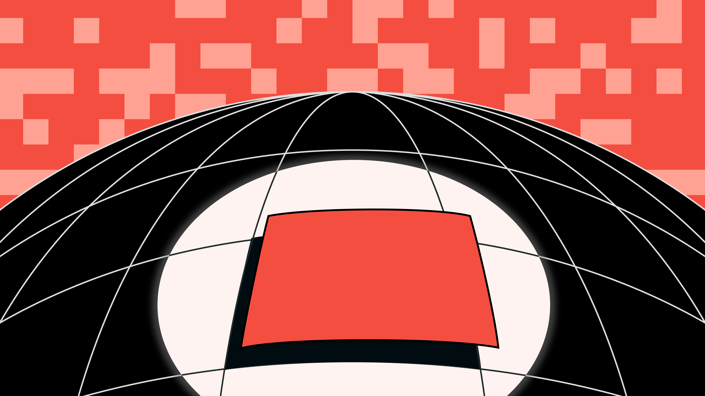
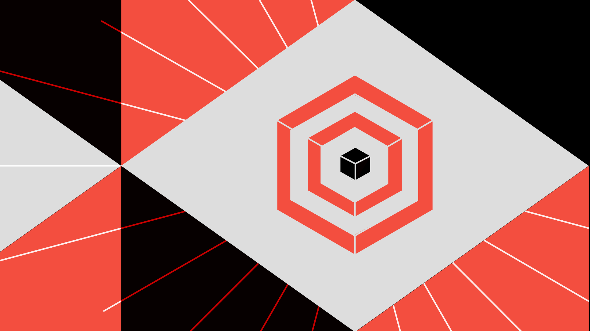
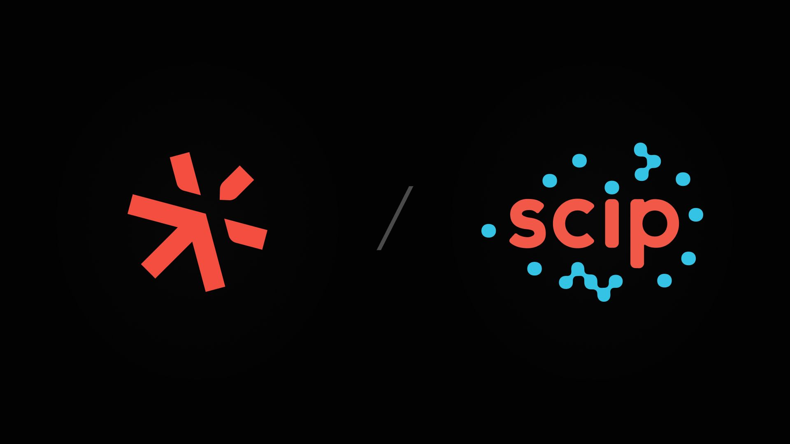
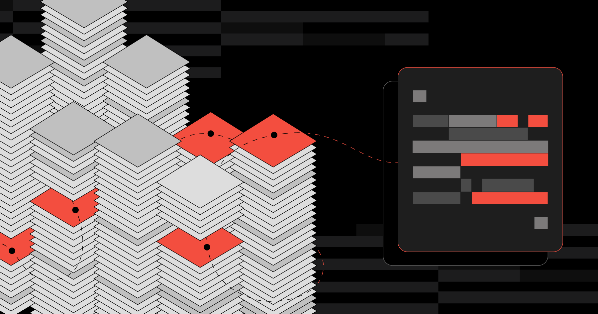

Shorts / Social
Developer tools, explained.
Demos and writing that make products click for those who'll actually use them.
Featured Work
Demos
Complete code search results with the Search Jobs API
Demos
Sourcegraph Changelog: Code Finder and Compare Page (July 2026)
Demos
Agentic Batch Changes Beta for migrations, security patching, and dependency updates
Demos
Make GitHub Copilot Smarter Across All Your Repositories with Deep Search MCP Server
Demos
Connecting goose AI agent to Sourcegraph Deep Search via MCP

Sourcegraph
Detection in one repo isn't a security posture

Sourcegraph
Dependency prefixes are a supply chain risk: let's fix them

Sourcegraph
The future of SCIP

Sourcegraph
No secrets! Quickly find sensitive files in your GitHub repo

Sourcegraph